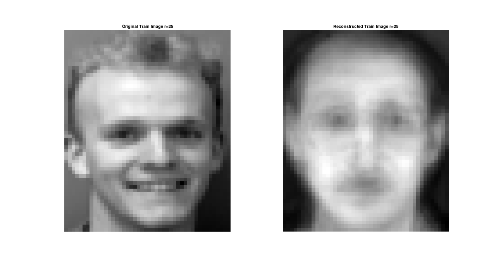

EE 779 : Advanced Topics in Signal Processing
Contents
Navjot Singh 130110071
(Some technical scripts may also be printed in the HTML file generated, please ingore them.)
Question 1
Zip file was extracted
Question 2
The code in nmf_main and nmfse was understood.
Question 3
Using rdim =49
nmf_navjot
Reading in the images...
[1/40][2/40][3/40][4/40][5/40][6/40][7/40][8/40][9/40][10/40][11/40][12/40][13/40][14/40][15/40][16/40][17/40][18/40][19/40][20/40][21/40][22/40][23/40][24/40][25/40][26/40][27/40][28/40][29/40][30/40][31/40][32/40][33/40][34/40][35/40][36/40][37/40][38/40][39/40][40/40]
trainMSE =
0.4199
testMSE =
6.3391e-06
myImgMSE =
669.7094

Conclusions:
trainMSE = 0.419
testMSE = 6.33 x 10^-6
myImgMSE = 669
Question 4
Using rdim =25
nmf2_navjot
Reading in the images...
[1/40][2/40][3/40][4/40][5/40][6/40][7/40][8/40][9/40][10/40][11/40][12/40][13/40][14/40][15/40][16/40][17/40][18/40][19/40][20/40][21/40][22/40][23/40][24/40][25/40][26/40][27/40][28/40][29/40][30/40][31/40][32/40][33/40][34/40][35/40][36/40][37/40][38/40][39/40][40/40]
trainMSE =
0.4168
testMSE =
6.3391e-06
myImgMSE =
803.2161
 Conclusions:
trainMSE = 0.4168
testMSE = 6.36 x 10^-6
myImgMSE = 803
With r (dim of V) reduced to 25, we observe that less amount of information is captured by our model. Hence the reconstructed image would have more error if we use less no. of components. This is also evident from the MSE values training images, of 0.413 in rdim=49 and 0.4385 in rdim=25 respectively. The MSE values follow the same order in case of test images too.
Question 5
Both PCA and NMF were run on the same set of data. The results show that PCA has a larger value of mean square error (on data image 23) of 1.32 as compared to 0.43 on the train image 23 using NMF. This may be because PCA involves adding or subtracting some components may not make sense in some applications, like there is no intuitive understanding to 'subtract a face'